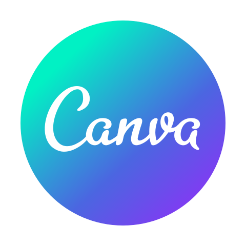
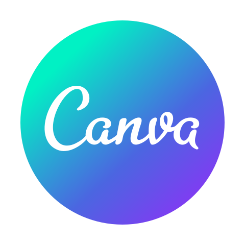

About Me
Hello world, Healthy greetings to all of us. My name is Ahmad Rayhan, and I am a Information Systems student at Airlangga University.
I have a passion and interest in the world of technology and business in depth.
I have been active and involved in various academic and non-academic
activities. I once made a website-based car rental application design project using the laravel framework. I can use the courses studied such as
Website and Mobile Programming, Databases, System Analysis and Design to Machine Learning so that they can support and hone the various skills needed.
In addition, I was once a member of HIMSI 2022 and is currently an active member of the Department of Social and Environment BEM FST 2023, was the
chief executive officer of the FST 2023 Village Development Program at the faculty level, HIMSI 2022 community service field coordinator at the study
program level, as well as various other student activities.
Until now I have a strong spirit and determination to be able to pursue all targets in order to improve my quality and abilities.
My Skills
Various abilities and skills that until now i use!
-


 



Organization Management / Teamwork
Ability to effectively manage an organization or committee.
Public Speaking
Good communication and public speaking skills.

Leadership
There are many variations of passages of but the majority have suffered alteration in some form.

Problem Solving
Able to think critically, quickly and precisely in solving various problems.
Program Management
Have the ability to be able to manage an activity and program in an innovative and creative manner.
Visionary
Have competent views or insights in deciding something by considering the various potentials and opportunities going forward.
My Education
The educational journey that I have been and am currently going through.
Airlangga University
Information System Student | GPA 3.242021 - now
Have activeness in the academic sphere which is balanced with various student and organizational activities. Website-based car rental application design project using the laravel framework. Leadership certification in faculties and departments.
SMA Negeri 1 Bangkalan
Science Major2018 - 2021
Active in various academic and non-academic activities. As class leader for 3 years in a row.
My Experiences
We provide high standar clean website for your business solutions

He was entrusted with being the chief executive of the flagship work program, Bina Desa FST 2023, being in charge of the agenda for community social activities, active and innovative in various faculty student discussion activities
Department of Social Environment, Badan Eksekutif Mahasiswa Fakultas Sains dan Teknologi 2023
Collaborative activities with the Alumni Association of the Faculty of Science and Technology, Airlangga University, in the form of joint iftar activities, providing compensation to orphanages and street children's communities, as well as active student gatherings with alumni which aim to establish good communication relations.
Head of Public Relations, Alumni Collaboration, Department of Public Relations X Department of Social and Environment, BEM FST 2023
Educational debriefing for grades 5 and 6 at SD Banyu Urip 10 in the form of using basic writing applications such as word and PowerPoint using a laptop as preparation material for entering the next level, taking responsibility for the continuity of activities and coordinating 3 divisions to ensure can progress well.
Field Activity Coordinator, Community Service Undergraduate Information Systems Student Association 2022
Activities for new students include an introduction to the study program environment and various materials and learning about college life so they can be ready to become students. Contribute to the management of permits, contacts with external parties and also security during the activity.
Kahumzin, Orientation Process and Character Development of Information Systems Study Program 2022
Participated in becoming the team champion in the faculty sports competition in the field of futsal by beating 7 other teams.
1st Place in Futsal Team, Dean Cup, BEM FST 2022Design Result
Various abilities and skills that until now i use!
-

Ever made a website-based car rental application design using the laravel framework
-

Was once the admin of a shoe dropshipping business as well as an online store page designer
-

Posters in the completion of the final project for the student orientation period and also promos in August
-

Ever made a clothing Umkm logo and cashew nut business marketing logo
-

Making packaging designs for the cashew nut business
-

Some edits for the shoe dropshipper business Instagram feed
-

Result of making a cashew nut business logo
My Certification
All forms of licenses and certificates are outside the portfolio so that they can be updated regularly, if you want to see them please click below!
Contact Us
Please don’t hesitate to get in touch with me by following my social media below:

.gif)


Copyright 2023 © Ahmad Rayhan